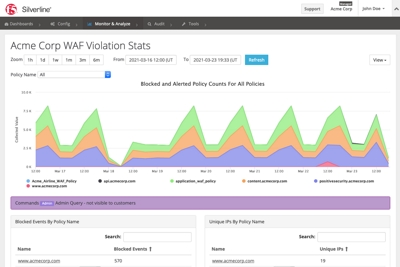
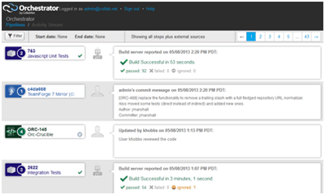
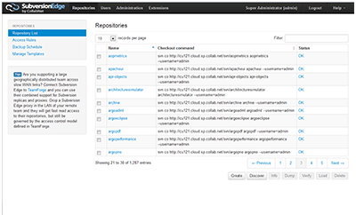
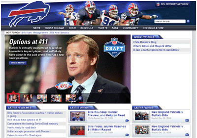
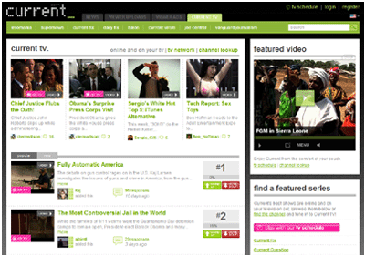
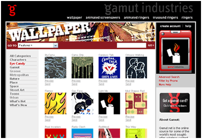
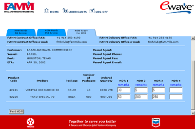
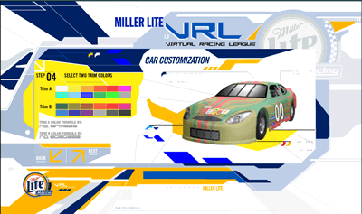

,,
`7MM
MM
`7M' ,A `MF'MM ,pP"Ybd `7MMpMMMb. `7MM `7MM ,pP"Ybd
VA ,VAA ,V MM 8I `" MM MM MM MM 8I `"
VA ,V VA ,V MM `YMMMa. MM MM MM MM `YMMMa.
VVV VVV MM L. I8 MM MM ,, MM MM L. I8
W W .JMML.M9mmmP' .JMML JMML.db `Mbod"YML.M9mmmP'
The Customer Portal for Silverline has been my primary project at F5. A Ruby on Rails app, the Portal manages customer configuration and presents a variety of stats and logs, largely by querying Elasticsearch.
Responsibilities: Ruby Programming (Rails), DevOps with Docker and Ansible, Documentation

At CollabNet, I served as technical lead for one of the Scrum teams which developed TeamForge Orchestrate. Written in Ruby on Rails, Orchestrate builds associations between the disparate artifacts of the software development process (commits, builds, code reviews, etc).
Responsibilities: Ruby Programming (Rails), Code Reviews, Documentation

Also at CollabNet, I was a principal contributor to the open-source Subversion Edge management console. Written in Groovy / Grails, the product allows for complete Subversion administration in an easy-to-use web interface. Feature responsibilities included backup and restore, replication, and user management.
Responsibilities: Groovy Programming (Grails), Database Schema

In 2008, Razorfish developed the NFL Clubsites application, which allows each of the NFL's 32 teams to create and manage a team web site using a centralized platform. Sites can be built from a large palette of components, including CMS managed content, statistics, media galleries, and play-by-play. As one of the Java leads, I developed much of the back-end plumbing, including the service and DAO layers.
Responsibilities: Java Programming (Spring/Hibernate), Database Schema

At Current TV (2007 to 2008), I worked on a variety of projects to upgrade and enhance their online business, including: internationalization for UK and Italian sites; a video opinion "wall" for recording and viewing political commentary; and a Grails-based administrative console.
Responsibilities: Java Programming (Spring/Hibernate; Grails), Database Schema

In 2005, I architected and built a mobile content distribution platform for Gamut Mobile. The multi-tiered system ran in a clustered J2EE environment and presented web and mobile views of the content. It was designed for easy reskinning as a private label offering.
Responsibilities: Java Programming, Database Schema, System Architecture

In Spring 2002, Red Sky Interactive worked with ChevronTexaco's Fuel and Marine Marketing division to develop a series of enhancemenents to their online order processing system, Ewave. I was responsible for requirements gathering and all programming to the EJB-based system.
Responsibilities: Java Programming

The Miller Lite Virtual Racing League was developed by Red Sky Interactive to support Miller Lite's Nascar promotion in 2001-02. The Flash interface communicated through a middle-tier servlet layer to an EJB backend. I contributed to all tiers.
Responsibilities: Java and ActionScript Programming
